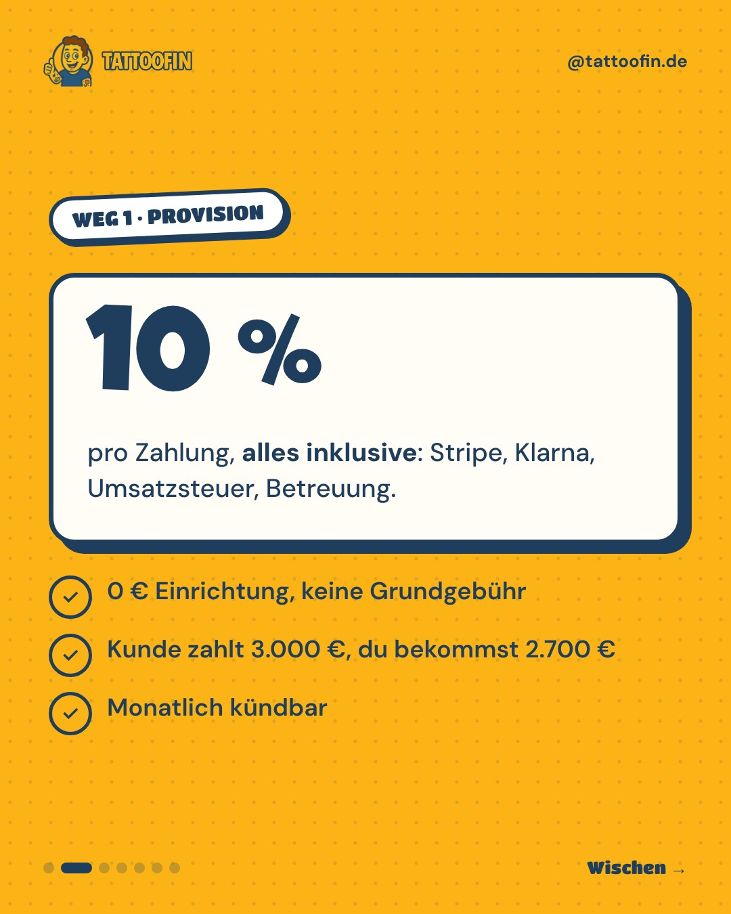
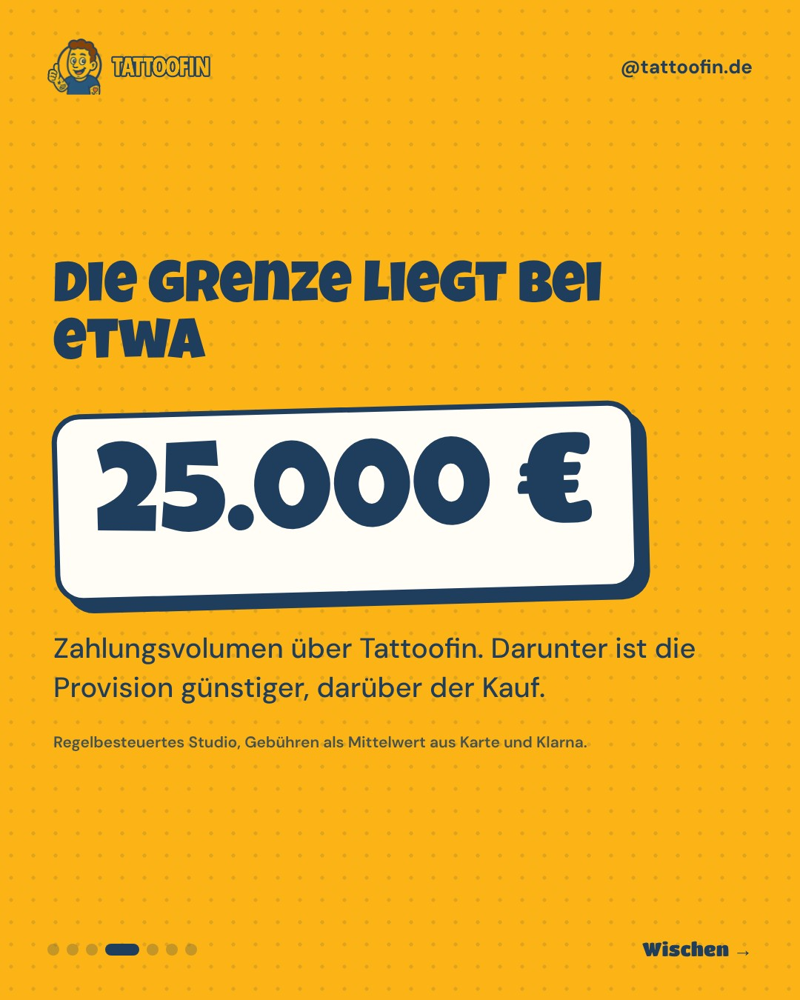
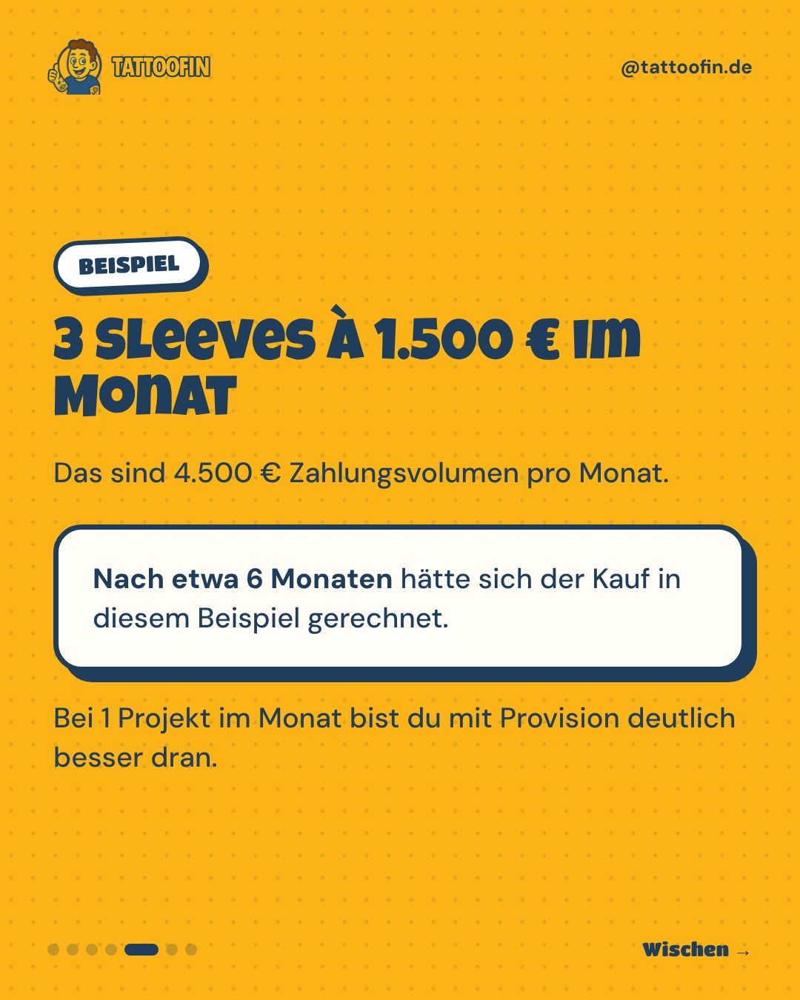
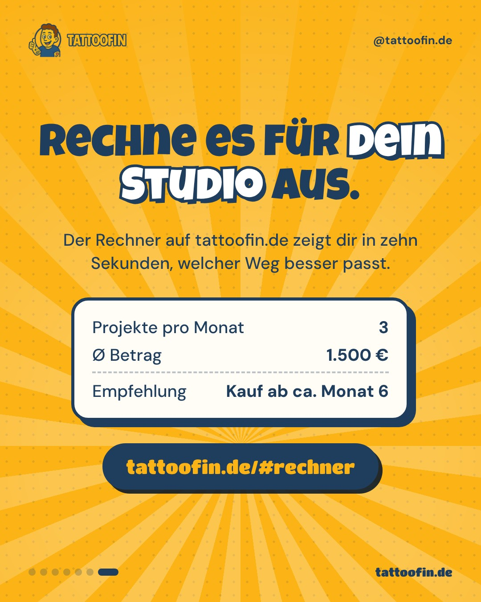

Samstag, 10.10.2026 · 12:00
SliderGepostet




Kaufen oder Provision? Ehrliche Rechnung mit Grenze bei etwa 25.000 €
Studio-Mathe
Kaufen oder Provision? Wir rechnen ehrlich, auch wenn die Antwort oft „Provision“ heißt. 🧮 Provision: 10 % pro Zahlung, alles inklusive. Kein Risiko, keine Fixkosten, monatlich kündbar. Kauf: einmalig 1.499 € netto, danach keine Provision. Die Gebühren des Zahlungsanbieters zahlst du direkt, bei Karte zum Beispiel ab 1,5 % + 0,25 €. Die Grenze liegt bei etwa 25.000 € Zahlungsvolumen über Tattoofin. Darunter ist die Provision günstiger, darüber der Kauf. Unser Rat: Starte mit Provision. Wenn es richtig gut läuft, sprechen wir über den Wechsel. Rechne es für dein Studio aus: Der Rechner auf tattoofin.de zeigt es dir in zehn Sekunden (Link in Bio). Beispielrechnung für ein regelbesteuertes Studio, Gebühren als Mittelwert aus Karte und Klarna. #tattoostudio #tattoobusiness #selbstständig #studioinhaber #tattoofinStory ansehen ↗ · Auf Instagram ↗